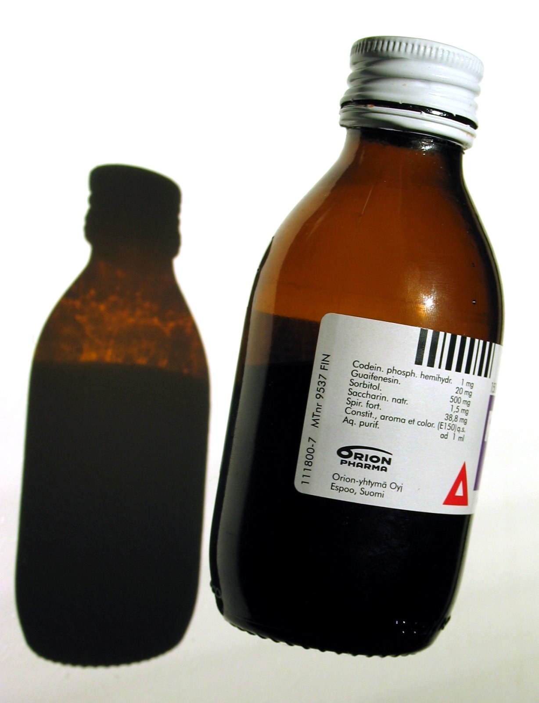

Dok-1 Max fojiasi: belgilangan 78 mlrd soʻm tovonning koʻp qismi hamon toʻlanmagan
Zaharlangan sirop sababli oʻnlab bolalar halok boʻlgan ish boʻyicha sud 78 mlrd soʻm tovon belgilagandi. Majburiy ijro byurosi maʼlumotiga koʻra, bugungacha atigi 16,7 mlrd soʻm toʻlangan; 61,3 mlrd soʻm hamon qarz.

Dok-1 Max siropidan zaharlanib halok boʻlgan va nogiron boʻlib qolgan bolalar oilalariga sud belgilagan tovonning katta qismi, voqeadan ikki yildan koʻproq vaqt oʻtgach, hamon toʻlanmagan.
Toshkent shahar sudi belgilagan 78 mlrd soʻm maʼnaviy tovondan Majburiy ijro byurosi maʼlumotiga koʻra bugungacha faqat 16,7 mlrd soʻm (taxminan 1,4 mln dollar) toʻlangan; 61,3 mlrd soʻm hamon qarz boʻlib qolmoqda. Byuro bu haqda 2026-yil 7-oktabrda maʼlum qildi.
Sud qarori
2024-yil 26-fevralda tugagan sud jarayonida 23 nafar sudlanuvchi (18 erkak, 5 ayol) poraxoʻrlik, xizmat vazifasini suiisteʼmol qilish, soliqdan boʻyin tovlash hamda sifatsiz dori ishlab chiqarish va sotish kabi jinoyatlarda aybdor deb topildi.
Quramax Medikal rahbari, Hindiston fuqarosi Singx Ragxvendra Pratap 20 yilga (keyin deportatsiya), Farmatsevtika sohasini rivojlantirish agentligining sobiq rahbari Sardor Kariyev 18 yilga ozodlikdan mahrum etildi; uning oʻrinbosarlari 16 yildan jazo oldi. Umumiy jazolar 3 yildan 20 yilgacha.
Sud 68 nafar vafot etgan bola oilalariga, shuningdek zarar koʻrgan bolalarga tovon toʻlashni belgilagan edi; ijro jarayonida 85 fuqaro ishtirok etadi.
Raqamlarda
- Belgilangan tovon: 78 mlrd soʻm
- Toʻlangan: 16,7 mlrd soʻm (~1,4 mln dollar)
- Qolgan qarz: 61,3 mlrd soʻm
- Halok boʻlgan bolalar: 68
- Nogiron qolgan bolalar: 16
- Aybdor deb topilganlar: 23 (18 erkak, 5 ayol)
- Ijrodagi daʼvogarlar: 85 fuqaro
Qarz qanday undirilmoqda
Byuro aybdorlarning mol-mulkini xatlab, kim oshdi savdosiga qoʻymoqda. Jumladan, Furqat koʻchasidagi noturarjoy bino 793 mln soʻmga sotildi; Chilonzordagi turarjoy obyekti (~7,1 mlrd soʻm) hamon savdoda. Toʻlovlar kim oshdi savdosi tushumi va Kariyev oilasi aʼzolarining hissalaridan amalga oshirilmoqda hamda daʼvogarlar oʻrtasida teng taqsimlanmoqda.
Fojia tarixi
2022–2023-yillarda Oʻzbekistonda Hindistonning Marion Biotech kompaniyasi ishlab chiqargan va Quramax Medikal import qilgan Dok-1 Max va Ambronol siroplaridan foydalangan bolalar kasallana boshlagan edi. Laboratoriya tekshiruvi preparatlarda buyrak yetishmovchiligiga olib keluvchi zaharli dietilenglikol borligini aniqladi. Jahon sogʻliqni saqlash tashkiloti (JSST) 2023-yil 11-yanvarda ogohlantirish eʼlon qildi.
Javob — na tartibga soluvchi, na sud darajasida — vaziyatning ogʻirligiga mos boʻlmadi.
— Amulya Nidhi, Jan Swasthya Abhiyan milliy koordinatori, Hindiston sogʻliqni saqlash faoli (Newslaundry tekshiruvi)